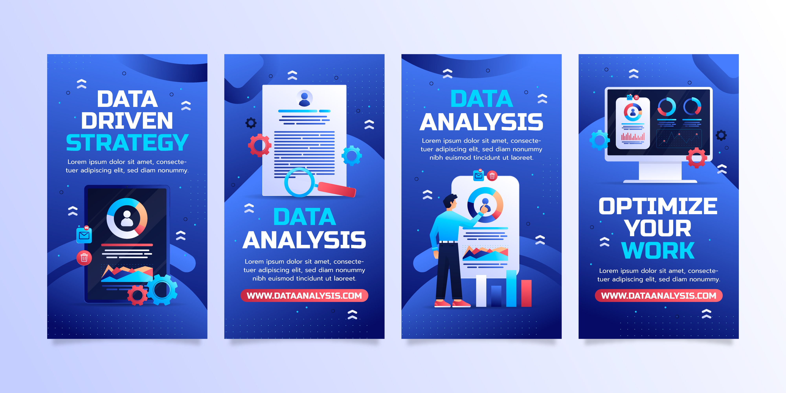

Quem sou eu? Porque me contratar?
Sou Pablo Escobar, estudante de Sistemas de Informação com foco em Análise de Dados. Estou desenvolvendo habilidades em Python, SQL, Power BI, Excel, Estatística e Inteligência Artificial, sempre buscando transformar dados em decisões mais inteligentes.
Meu objetivo é unir tecnologia e estratégia para gerar resultados reais e mensuráveis.
Minha trajetória
Experiência em dados e tecnologia
Cursando Sistemas de Informação e me especializando em análise de dados, desenvolvo projetos práticos com Python, SQL, Power BI e Estatística para construir uma base sólida e orientada a resultados.

Python
SQL
Power BI
Meus Projetos
Transformando dados em decisões inteligentes
Projetos em desenvolvimento — em breve novidades! Acompanhe minha evolução como analista de dados.